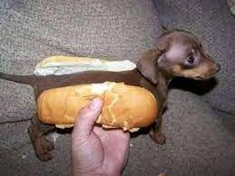

Perro Caliente

Ingredients
- Hot dog bun
- Sausage
- Mustard
- ketchup
- Option topping
Preparation Steps
- Bring a pot of water to a boil. Add the hot dog sausage and cook for about 5 minutes.
- Preheat your grill. Grill the hot dog for about 5-7 minutes, turning occasionally until it's nicely browned.
- Heat a skillet over medium heat. Add the hot dog and cook for about 5 minutes, turning occasionally until it's browned to your liking.
- If you prefer a toasted bun, lightly butter the inside of the hot dog bun and toast it in a skillet over medium heat until slightly golden.
- Place the cooked hot dog in the bun. Add mustard, ketchup, and any other toppings of your choice.
- Serve the hot dog immediately, perhaps with a side of chips, pickles, or a simple salad.
Previous
Main Page